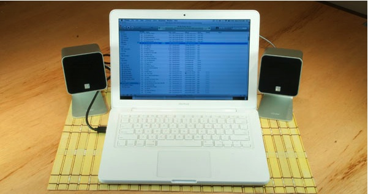

8.3 Áudio



Os sons, tais como o ruído de determinadas máquinas ou o zumbido de fundo do cotidiano, apresentam um significado associativo, bem como um significado puro, que pode ser utilizado para evocar imagens ou ideias relevantes para a substância principal do que está a ser ensinado. Existem, por outras palavras, circunstâncias em que o áudio se revela essencial para mediar com eficácia certos tipos de informação.
Durbridge, 1984
8.3.1 O áudio: a mídia subestimada
Vimos que a comunicação oral conta com uma longa história e continua hoje presente no ensino presencial e na programação geral de rádio. Nesta seção, contudo, focar-me-ei principalmente no áudio gravado que, a meu ver, constitui uma mídia educacional muito poderosa quando bem utilizada.
Tem-se verificado bastante investigação sobre as características pedagógicas únicas do áudio. Na Open University do Reino Unido, as equipes das disciplinas tinham de concorrer à atribuição de recursos de mídias para complementar os materiais impressos especialmente planejados. Uma vez que os recursos de mídias eram inicialmente desenvolvidos pela BBC (e, por conseguinte, eram limitados e de produção onerosa), as equipes das disciplinas (em articulação com o produtor da BBC que lhes fora atribuído) tinham de especificar de que forma a rádio ou a televisão seriam utilizadas para apoiar a aprendizagem. Em particular, solicitava-se às equipes que identificassem quais as funções de ensino a que a televisão e a rádio responderiam de forma única. Após a atribuição e desenvolvimento de uma disciplina, avaliavam-se amostras dos programas em termos da eficácia com que respondiam a essas funções, bem como da reação dos estudantes à programação. Em anos posteriores, aplicou-se a mesma abordagem quando a produção transitou para cassetes de áudio e de vídeo.
Este processo de identificação de papéis únicos seguido da avaliação dos programas permitiu à OU, ao longo de vários anos, identificar quais os papéis ou funções que se revelavam particularmente adequados a diferentes mídias (Bates, 1984). Koumi (2006), ele próprio um antigo produtor da BBC/OU, deu continuidade a esta investigação e identificou várias outras funções essenciais para o áudio e o vídeo. Durante um período relativamente semelhante, Richard Mayer, na Universidade da Califórnia em Santa Bárbara, realizava a sua própria pesquisa sobre a utilização da multimídia na educação (Mayer, 2009).
Embora se tenham verificado desenvolvimentos contínuos na tecnologia de áudio, desde as cassetes de áudio aos Walkmans da Sony e aos podcasts, as características pedagógicas do áudio permaneceram notavelmente constantes ao longo de um período bastante alargado.
8.3.2 Características de apresentação
Embora o áudio possa ser utilizado isoladamente, é frequentemente utilizado em combinação com outras mídias, em especial com o texto. Isoladamente, o áudio consegue apresentar:
- a linguagem falada (incluindo línguas estrangeiras) para análise ou prática;
- a música, seja como atuação artística ou para análise;
- aos estudantes um argumento condensado que possa:
- reforçar pontos abordados noutras partes da disciplina;
- introduzir novos pontos não abordados noutras partes da disciplina;
- proporcionar uma perspectiva alternativa às visões presentes no restante conteúdo da disciplina;
- analisar ou criticar materiais noutras partes da disciplina;
- resumir ou condensar as ideias principais ou os pontos centrais abordados na disciplina;
- fornecer novas evidências a favor ou contra os argumentos ou perspectivas abordados noutras partes da disciplina;
- entrevistas com pesquisadores de renome ou especialistas;
- debates entre duas ou mais pessoas para apresentar visões diversas sobre um tema;
- fontes de áudio primárias, tais como o canto dos pássaros, a fala de crianças, relatos de testemunhas oculares ou atuações gravadas (teatro, concertos);
- a análise de fontes de áudio primárias, através da reprodução da fonte seguida de análise;
- "notícias de última hora" que enfatizem a relevância ou aplicação de conceitos abordados na disciplina;
- a abordagem pessoal do professor sobre um tema associado à disciplina.
Constatou-se, contudo, que o áudio se revela particularmente "potente" quando combinado com o texto, uma vez que permite aos estudantes utilizarem os olhos e os ouvidos em simultâneo. O áudio revelou-se especialmente útil para:
- explicar ou orientar oralmente (talk through) a leitura de materiais apresentados sob a forma de texto, tais como equações matemáticas, reproduções de pinturas, gráficos, tabelas estatísticas e até amostras físicas de rochas.
Esta técnica foi posteriormente desenvolvida por Salman Khan, mas recorrendo ao vídeo para combinar a explicação em voz-off (áudio) com a apresentação visual de símbolos, fórmulas e soluções matemáticas.
8.3.3 Desenvolvimento de competências
Devido à capacidade do aprendiz de parar e reiniciar o áudio gravado, este revelou-se particularmente útil para:
- permitir aos estudantes, através da repetição e da prática, dominar determinadas competências ou técnicas auditivas (por exemplo, a pronúncia de línguas, a análise de estruturas musicais, o cálculo matemático);
- levar os estudantes a analisar fontes de áudio primárias, tais como a utilização da linguagem pelas crianças ou as atitudes face à imigração a partir de gravações de entrevistas;
- alterar as atitudes dos estudantes através de:
- apresentação de materiais sob uma perspectiva inovadora ou pouco familiar;
- apresentação de materiais sob uma forma dramatizada, permitindo aos estudantes identificarem-se com alguém que detenha uma perspectiva diferente.
8.3.4 Pontos fortes e limitações do áudio como mídia de ensino
Em primeiro lugar, algumas vantagens:
- revela-se muito mais simples produzir um clipe de áudio ou um podcast do que um clipe de vídeo ou uma simulação;
- o áudio exige muito menos largura de banda do que o vídeo ou as simulações, descarregando por isso mais rapidamente e podendo ser utilizado em ligações de menor velocidade;
- combina-se facilmente com outras mídias, como texto, símbolos matemáticos e recursos gráficos, permitindo utilizar mais do que um sentido e viabilizando a integração;
- alguns estudantes preferem aprender ouvindo em vez de lendo;
- o áudio combinado com o texto pode ajudar a desenvolver competências de leitura e escrita ou apoiar estudantes com baixos níveis de alfabetização;
- o áudio proporciona variedade e outra perspectiva face ao texto, uma "pausa" na aprendizagem que refresca o aprendiz e mantém o interesse;
- Nicola Durbridge, na sua investigação na Open University, constatou que o áudio aumentava a sensação de "proximidade" pessoal dos estudantes com o professor em comparação com o vídeo ou o texto, ou seja, trata-se de uma mídia mais íntima.
Em particular, a flexibilidade acrescida e o controle do aprendiz implicam que os estudantes aprenderão frequentemente melhor a partir de gravações de áudio preparadas previamente e combinadas com material textual complementar (como um site com slides) do que a partir de uma aula presencial ao vivo.
Existem também, naturalmente, desvantagens no áudio:
- a aprendizagem baseada no áudio revela-se difícil para pessoas com deficiência auditiva;
- a criação de áudio representa trabalho adicional para o professor;
- o áudio é frequentemente melhor utilizado em articulação com outras mídias, como o texto ou os recursos gráficos, acrescentando assim complexidade ao design do ensino;
- a gravação de áudio exige, pelo menos, um nível mínimo de proficiência técnica;
- a linguagem falada tende a apresentar-se menos precisa do que o texto.
O vídeo é hoje cada vez mais utilizado para combinar áudio sobre imagens, como na Khan Academy, mas existem muitas circunstâncias, como quando os estudantes trabalham a partir de textos recomendados, em que o áudio gravado funciona melhor do que uma gravação de vídeo.
Assim, valorizemos o áudio!
Referências
Bates, A. (1984) Broadcasting in Education: An Evaluation London: Constables
Bates, A. (2005) Technology, e-Learning and Distance Education London/New York: Routledge
Durbridge, N. (1984) Audio-cassettes, in Bates, A. (ed.) The Role of Technology in Distance Education London/New York: Croom Hill/St Martin’s Press
EDUCAUSE Learning Initiative (2005) Seven things you should know about… podcasting Boulder CO: EDUCAUSE, junho
Koumi, J. (2006). Designing video and multimedia for open and flexible learning. London: Routledge.
Mayer, R. E. (2009). Multimedia learning (2nd ed). New York: Cambridge University Press.
Postlethwaite, S. N. (1969) The Audio-Tutorial Approach to Learning Minneapolis: Burgess Publishing Company
Salmon, G. and Edirisingha, P. (2008) Podcasting for Learning in Universities Milton Keynes: Open University Press
Atividade 8.3 Identificando as características pedagógicas únicas do áudio
- Escolha uma das disciplinas que ministra. Quais os aspectos essenciais de apresentação do áudio que poderiam assumir relevância para esta disciplina?
- Analise as competências listadas na Seção 1.2 deste livro. Quais destas competências seriam mais bem desenvolvidas através da utilização do áudio em vez de outras mídias? Como faria isso recorrendo a um ensino baseado no áudio?
- Em que condições seria mais adequado avaliar os estudantes solicitando-lhes que realizassem uma gravação de áudio? Como poderia isso ser feito em condições de avaliação?
- Em que medida considera que a redundância ou a duplicação entre diferentes mídias constitui um aspecto positivo? Quais as desvantagens de abordar o mesmo tema através de mídias distintas?
- Consegue pensar em quaisquer outras características pedagógicas únicas do áudio?
Clique no podcast abaixo para feedback sobre esta atividade:
Um elemento de áudio foi excluído desta versão do texto. Você pode ouvi-lo on-line aqui: https://pressbooks.bccampus.ca/teachinginadigitalagev2/?p=203